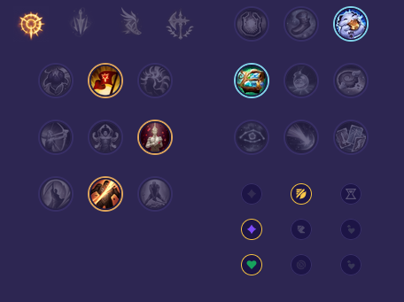

Starter: Ostrze Dorana Mikstura Zdrowia Core Bulid: Klinga Burzy Nagolenniki Berserkera Ostrze Nieskończoności Full Bulid: Pozdrowienia Lorda Dominika Nieśmiertelny Łuklerz Krwiopijec Śmiertelne Przypomnienie Kolejność Maksowania Abilitek: AD (Q) -> Lethality (E) -> Attack Speed (W)

Słaby przeciwko: - Samira - Senna - Mel - Ziggs - Miss Fortune - Twitch Dobry przeciwko: - Yunara - Yasuo - Kai'Sa - Swain - Vayne - Ezreal